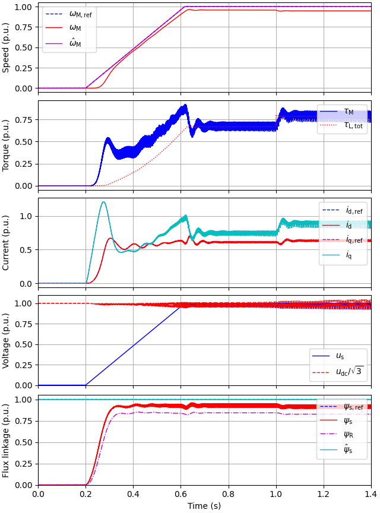
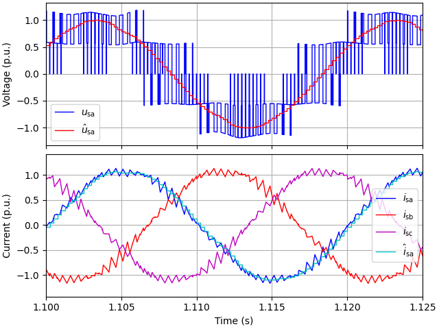
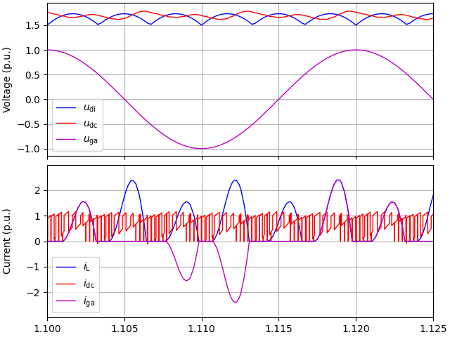

Note
Go to the end to download the full example code
V/Hz control: 2.2-kW induction motor
A diode bridge, stiff three-phase grid, and a DC link is modeled. The default parameters correspond to open-loop V/Hz control.
Import the package.
from time import time
import numpy as np
import motulator as mt
Compute base values based on the nominal values (just for figures).
base = mt.BaseValues(
U_nom=400, I_nom=5, f_nom=50, tau_nom=14.6, P_nom=2.2e3, n_p=2)
Create the system model.
# Γ-equivalent motor model with main-flux saturation included
motor = mt.InductionMotorSaturated(
R_s=3.7, R_r=2.5, L_ell=.023, L_su=.34, beta=.84, S=7, n_p=2)
# Mechanics model
mech = mt.Mechanics(J=.015)
# Frequency converter with a diode bridge
conv = mt.FrequencyConverter(L=2e-3, C=235e-6, U_g=400, f_g=50)
# Collect the system model
mdl = mt.InductionMotorDriveDiode(motor, mech, conv)
Control system (parametrized as open-loop V/Hz control).
ctrl = mt.InductionMotorVHzCtrl(
mt.InductionMotorVHzCtrlPars(R_s=0, R_R=0, k_u=0, k_w=0))
Set the speed reference and the external load torque. More complicated signals could be defined as functions.
ctrl.w_m_ref = lambda t: (t > .2)*(1.*base.w)
# Quadratic load torque profile (corresponding to pumps and fans)
k = 1.1*base.tau_nom/(base.w/base.n_p)**2
mdl.mech.tau_L_w = lambda w_M: k*w_M**2*np.sign(w_M)
# Stepwise load torque at t = 1 s, 20% of the rated torque
mdl.mech.tau_L_t = lambda t: (t > 1.)*base.tau_nom*.2
Create the simulation object and simulate it. The option pwm=True enables the model for the carrier comparison.
sim = mt.Simulation(mdl, ctrl, pwm=True)
t_start = time() # Start the timer
sim.simulate(t_stop=1.5)
print(f'\nExecution time: {(time() - t_start):.2f} s')
Execution time: 17.29 s
Plot results in per-unit values.
Note
The DC link of this particular example is actually unstable at 1-p.u. speed at the rated load torque, since the inverter looks like a negative resistance to the DC link. You could notice this instability if simulating a longer period (e.g. set t_stop=2). For more information, see e.g. https://doi.org/10.1109/EPE.2007.4417763
# sphinx_gallery_thumbnail_number = 2
mt.plot(sim, base=base)
mt.plot_extra(sim, t_span=(1.1, 1.125), base=base)
- 
- 
- 
Total running time of the script: ( 0 minutes 19.131 seconds)